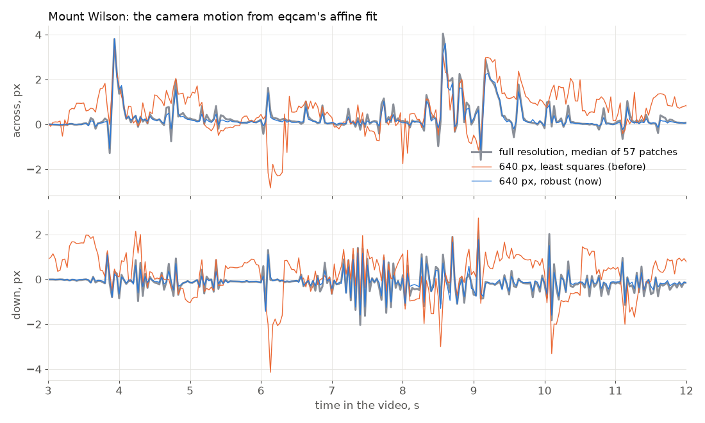
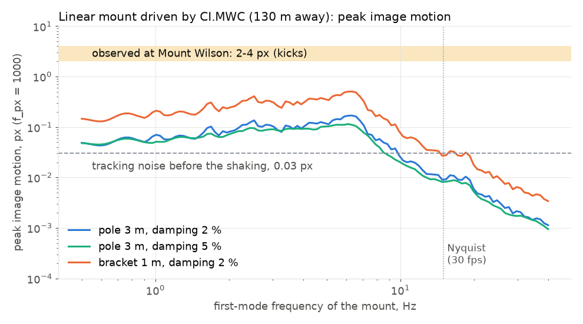
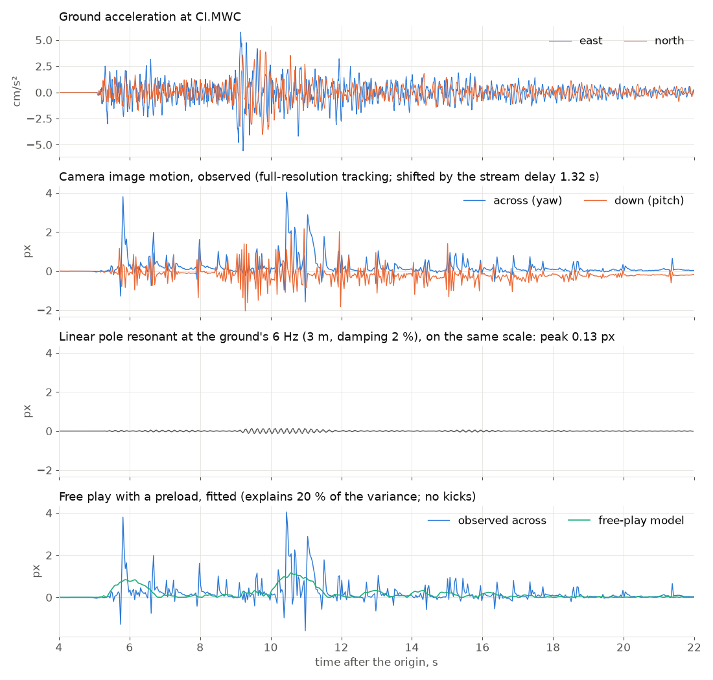
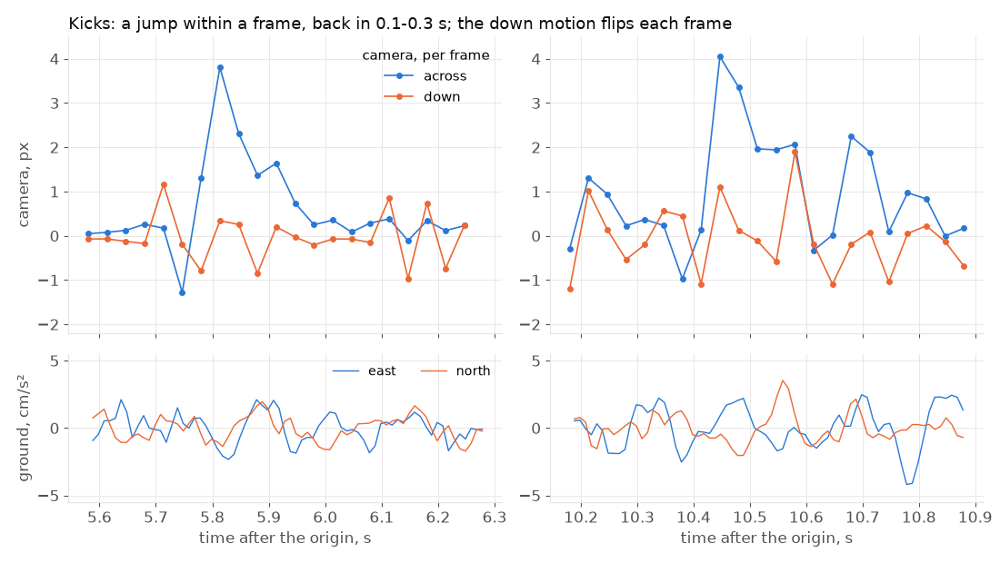

Camera mount model: Mount Wilson
2026-11-20 11:25:35 UTC, Mw 3.94, 1 km NW of Commerce, CA. Camera 0012 (Mount Wilson, 26 km from the epicenter) and station CI.MWC, 130 m away. Draft note, 2026-11-24; follows Camera motion vs seismic stations.
Draft research note. A camera's image moves with the ground and with its mount. Can a calibration made outside earthquakes (the mount's ambient vibration) remove the mount and leave the ground motion? We write a model of a camera on a mount driven by the ground and test it on the camera closest to a seismic station: Mount Wilson, whose image motion shows no mount resonance. One camera, one small event; not reviewed.
In short
- Model. The image moves mostly because the camera rotates: the image shift is the focal length in pixels times the rotation (a 3 mm translation moves a distant scene by about 0.1 px). The rotation is the ground acceleration filtered by the mount's modes. Below the first mode the camera reads the acceleration times a gain of about 2·a/(Lω12); at the mode the motion is amplified by about 1/(2ζ); above it, it falls off. The frame rate samples it, without an anti-alias filter.
- Mount Wilson is not a linear mount. Linear mounts driven by the station's record (5.8 cm/s²) move the image by at most 0.17 px (0.5 px for a 1 m bracket). The camera moved 2-4 px. No linear model fits the waveform: 11 % of the variance at best, stiff, resonant or soft, at any frequency and damping.
- The motion is impulsive. One-sided kicks across the image (a jump within one frame, back in 0.1-0.3 s), 21 in 16 s, with skewness 2.6 and kurtosis 26. The vertical motion flips sign every frame (energy near or above the 15 Hz Nyquist frequency, aliased). The kicks come with the stronger shaking. In 100 s of calm air after the event there are none, so they are not glitches that the stream makes at random. A simple free-play model (a part held against a stop by a preload) explains 20 % of the motion but makes no kicks. The mechanism is open: a loose part inside the camera (10-20 µm of play is enough; the ground moved 40-70 µm), play in the pan head, or the encoder under motion.
- Calibration. The ambient vibration gives a linear mount's frequencies and damping, not its gain (the force of the wind is unknown): the gain needs a known input, such as events recorded by a nearby station. For a camera like Mount Wilson, no ambient calibration predicts the response. A calibration has to test linearity first. eqcam now does that, and the fit of the camera motion no longer makes false offsets and rolls at night (below).
1. A model of a camera on a mount
What the image measures
s(t_k) = (1/T_e) ∫ over the exposure [ f_px · θ(t) + δ(t) / p + f_px · u(t) / Z ] dt + n_k t_k = k / fps + stream delay
θ: the rotation of the camera (rad);f_px: the focal length in pixels (about 1000 for a 1280-px wide view of 65°). Across ≈ f_px·yaw, down ≈ f_px·pitch; roll turns the image about its center.δ/p: a shift of the lens against the sensor (p, the pixel pitch, about 3-4 µm): 10 µm of play in the optics moves the image by about 3 px, as much as 3 mrad of rotation of the whole camera.f_px·u/Z: the camera's translation u over the distance Z of the scene: zero for a distant scene (Mount Wilson looks at the basin, 10-40 km away).- The exposure Te averages (a sinc in frequency) and the frames sample at fps without an anti-alias filter: the ground motion above fps/2 folds back into the band. At CI.MWC 11-14 % of the power was above 15 Hz.
- The tilt of the ground itself, at 6 Hz here, is about 10-6 rad (0.001 px): negligible.
The mount: a pole as a cantilever
Each bending mode n (frequency ωn, damping ζn, shape φn, participation Γn) of a pole of height L, driven by the ground acceleration a(t) at its base:
q̈_n + 2 ζ_n ω_n q̇_n + ω_n² q_n = −Γ_n a(t) θ(t) = Σ_n φ_n'(L) q_n(t) Θ(ω) / A(ω) = −Σ_n Γ_n φ_n'(L) / (ω_n² − ω² + 2i ζ_n ω_n ω)
The ground has three components and the camera three rotations, so the response is a 3 × 3 matrix, not one number. The pole bending toward the view gives pitch (down in the image), the pole bending sideways gives roll, the vertical acceleration bends the bracket (pitch), and an eccentric head (offset e) twists the pole under the acceleration across the view (torque M·e·a, torsional mode ωt): yaw, across in the image.
Three regimes, and the gain
- Stiff (ω1 above the band): a flat response, the image follows the acceleration. For a uniform pole, θ ≈ 2.06·a / (L·ω12) (first mode alone: Γ1φ1'(L) ≈ 2.16/L). A 3 m pole at 20 Hz under 1 m/s² turns by about 4×10-5 rad, 0.04 px.
- Resonant: amplified about 1/(2ζ) times (10-25) near ω1; it rings on after the shaking.
- Soft (ω1 below the shaking): falls off as 1/ω²: the image follows the ground displacement, small.
What a calibration outside earthquakes can identify
- The ambient motion (wind, traffic) gives the poles: ωn and ζn. Not the gain, since the input is unknown, and the wind loads the head rather than the base, so it excites the modes in other proportions than the ground does.
- With the poles known, the ground acceleration can be recovered up to a scale by dividing by H(ω), stabilized (a water level), with the band near ω1 masked: there the division is by about 2ζ, and an error δ in ω1 becomes a relative error of about δ/ζ (5 % at ζ = 2 %: 250 %).
- The gain: from the formula above (L from the image, f_px from the zoom; to an order of magnitude), or from events recorded by a nearby station (stacked camera/station spectral ratios), or relative to a first event whose PGA is known (the gain cancels for the same camera and view).
- All this holds for a linear mount. Frequencies drop and damping rises in strong shaking, and a mount with free play is not linear at all: then nothing measured in calm air predicts the response.
2. Mount Wilson: the data
The camera (1280 × 720, 30 fps, H.264 IBBP at 3.3 Mbit/s, night) looks over the Los Angeles basin from the top of the mountain. CI.MWC, 130 m away, recorded 5.8 (east), 4.0 (north) and 3.4 (vertical) cm/s², its power peaking near 6 Hz. We used its broadband HH channels, the response removed, as the input of the models. The image motion was tracked again at full resolution (57 patches of 96 px over the city lights, the median shift per frame), as a check of eqcam's measurement. The stream delay that best aligns the envelopes of the camera and station motion is 1.32 s (envelope correlation 0.86).
A false offset and roll in eqcam's measurement, now fixed
eqcam fitted an affine motion (shift, roll, scale, shear) to a 10 × 6 grid of patches at 640 px by ordinary least squares, frame by frame. At night the bottom row of patches shows the black ridge in the foreground: sensor noise that passed the texture test and, in some frames, matched at ±30 px. A few such patches made a false 3 px offset held for 0.2 s and a roll of 10 mrad (6.1-6.3 s in the video), and doubled the apparent amplitude elsewhere. The fit is now robust: each patch weighted by the quality of its match in that frame and by Tukey's biweight of its residual, iterated from the median shift. Against the full-resolution tracking, the correlation went from 0.46 / 0.35 (across / down) to 0.97 / 0.96. The roll fell from 1.2 to 0.3 mrad rms and the scale noise from 1670 to 350 ppm. At LAX (a 7.75 Hz resonance of 6 px), the amplitude moved from 0.94 / 0.87 to 1.09 / 1.01 of the full-resolution value; the other cameras changed little.

3. Size: linear mounts move the image far less
Driving a uniform pole (first mode, f_px = 1000) with the horizontal record of CI.MWC gives the peak image motion as a function of the pole's frequency (Figure 2). It is largest when the pole is resonant at the ground's 6 Hz: 0.17 px for a 3 m pole at 2 % damping, 0.5 px for a 1 m bracket. A stiff mount, above the Nyquist frequency, moves the image by less than 0.01 px, below the tracking noise. The camera moved by 2-4 px.

4. Shape: no linear model fits the waveform
Each model was driven by the station's three components (their weights and the stream delay fitted by least squares), averaged over the exposure and sampled at the frame times with aliasing, and compared with the observed motion (high-passed at 0.5 Hz, through the shaking).
| Model | Variance explained, down | Across |
|---|---|---|
| Stiff mount (image ∝ acceleration) | 0.02 | 0.04 |
| Image ∝ velocity | 0.02 | 0.05 |
| Image ∝ displacement | 0.01 | 0.06 |
| One mode, best of 0.6-40 Hz and damping 2-40 % | 0.11 | 0.02 |
| Free play with a preload (below), across | – | 0.20 |

5. The kicks

- Shape. The motion across jumps by 2-4 px within one frame and returns in 0.1-0.3 s without oscillating, always the same way (skewness 2.6, kurtosis 26; 21 kicks in 16 s). The motion down flips sign every frame: energy near or above the 15 Hz Nyquist frequency, aliased.
- Calm air. The 100 s of the same video after the shaking have no kick (skewness 0.5, motion 0.004 px rms). The kicks are tied to the shaking, not glitches that the stream makes at random.
- Timing. They come in the stronger shaking: the 0.5 s average of the horizontal acceleration at the kick frames ranks above the other frames with an AUC of 0.78. Whether single acceleration peaks trigger them is not clear: scanning the direction and the delay gives an AUC of 0.87, against 0.80 for the 95th percentile of random kick times, at a delay at the edge of the scan.
- Free play. A part held against a stop by a preload, lifted off by the ground acceleration along some direction and dropping back with damping (fitted: direction, preload, damping, delay, gain), explains 20 % of the motion across, mostly its slow rise in the strong shaking, and makes no kick. A better model would need the impacts (restitution, a second stop) or a mode of the loose part itself.
- Where. A rotation of the whole camera by 3-4 mrad within 33 ms under 0.006 g is hard to get from a mount; a loose element inside the camera needs only 10-20 µm of play, less than the ground displacement (peak 67, 51 and 38 µm east, north and up). Play in the pan head, or the encoder under motion, remain possible: the encoder spends about twice the bits per frame during the shaking (P frames 43 against 25 kB), but the frames of the kicks are not consistently larger than the others. The frame by frame shape of daytime events, and the same camera in other events, would tell them apart.
6. What it means for calibration
- Test linearity first: is the motion in calm air, in wind and in shaking symmetric, without kicks? Then the mount can be calibrated: its poles from the ambient vibration (many clips, day and night, windy), its gain from events with a nearby station, its drift from the frequencies at events against those in calm air.
- Sort the cameras: linear and stiff (a clean accelerometer up to a gain), linear and resonant (correctable away from the resonance), impulsive (timing and envelope only), or dominated by the video.
- For an impulsive camera, the kicks themselves may still measure the shaking: their rate and size against the PGA, calibrated over events, as a threshold detector.
- Objects in the scene avoid the mount altogether: a cable with a known mode, measured relative to the camera, behaves as a narrowband seismometer (see A cable as a seismometer).
- One event, one camera: Mount Wilson's single ambient clip (3 Hz) did not match its event frequency (8.4 Hz), nor did Venice's. Routine recordings, longer and repeated, are needed.
7. Changes in eqcam after this note
vibration.fit_camera: robust, frame by frame (match quality and Tukey's biweight). Test:test_fit_camera_robust.frames.linearity: kicks (steps over 6 times the typical step and 0.2 px), skewness, kurtosis; impulsive at 0.3 kicks/s or more and |skewness| ≥ 1 or kurtosis ≥ 8. Invibration.json(camera.linearity), the figure, the popup and a map class "impulsive (not linear)". Test:test_linearity. On this event only Mount Wilson is impulsive (LAX: 2 kicks, kurtosis 7.7; Venice: 2 kicks, kurtosis 8.6, at 0.24 kicks/s).calibrate: the linearity of each ambient clip, whether a camera was impulsive at events (fromvibration.json), new catalog columns (ambient_impulsive_clips,impulsive_at_events), a note and a change. The camera catalog now lists Mount Wilson as impulsive in the shaking.- The text for a mount without resonance no longer says that its motion is "closer to the ground shaking". README and skill updated.
The camera motion and spectra of this event are in its vibration map and arrivals map.
Station data: Southern California Earthquake Data Center (SCEDC), CI.MWC broadband; location: USGS ComCat (ci41364111). Camera motion: eqcam, from a public camera stream. About, sources and removal requests